| 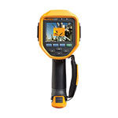 |
|
Zwei wichtige Messfunktionen in einer bemerkenswerten Wärmebildkamera
Das neue Gasleck- und Wärmebild-Diagnosegerät Ti450 SF6 bietet einen hohen Nutzwert und amortisiert sich dadurch schnell. Der ergonomische Pistolengriff und das einfache Anvisieren und Aufnehmen von Bildern erleichtern die Untersuchung auch schlecht zugänglicher Stellen. Mit der Zusatzfunktion zur Lokalisierung von Hexafluorid (SF6)-Gaslecks können Sie jederzeit und überall die benötigten Untersuchungen durchführen. |
|
| 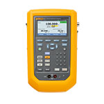 |
|
Druckkalibrierung einfacher und schneller ausführen und dokumentieren. |
|
| 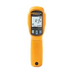 |
|
Das Infrarot-Thermometer Fluke 64 MAX
Das Fluke 64 MAX arbeitet, wenn Sie nicht am Messort sein können – durch automatische Messungen mit Protokollierung von bis zu 99 Messwerten. Die integrierte Taschenlampe, 30 h Betriebsdauer, Schutzart IP 54 und Widerstandsfähigkeit gegen einen Fall aus 3 Metern machen es zum idealen IR-Thermometer.
Wichtigste Merkmale
- Abstand zum Messfleck 20:1 für Messungen aus größeren Abständen und verbesserte Genauigkeit
- Stellen Sie die Zeit und das gewünschte Intervall zwischen den Messungen ein, die Aufnahmeautomatik erfasst die Temperaturwerte und legt sie im internen Speicher ab
- 30 Stunden Batteriebetriebsdauer für lange Einsatzzeiten
- Taschenlampe und große LCD-Anzeige mit Hintergrundbeleuchtung zur Erleichterung der Arbeit bei schlechter Beleuchtung
|
|
| 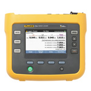 |
|
Die dreiphasigen Energie-Logger Fluke 1732 und 1734 dienen zur einfachen Erkennung von Quellen der Energieverschwendung. Finden Sie heraus, wann und wo in Ihrem Unternehmen Energie verbraucht wird – von Versorgungsleitungen bis zu individuellen Stromkreisen. Über die Fluke Connect® App hat das gesamte Team ortsunabhängig Zugriff auf die Daten. Die App ermöglicht das Arbeiten aus sicherer Entfernung, ohne dass Sie eine persönliche Schutzausrüstung benötigen. Sie können wichtige Entscheidungen sofort treffen, müssen weniger häufig unmittelbar vor Ort sein und somit seltener die Zutrittskontrollen für die jeweilige Anlage absolvieren. |
| 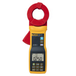 |
|
Spießlose Erdschleifen- und AC-Leckstromzange für schnelle und sichere Messungen des Erdungswiderstands und des AC-Leckstroms im Innen- und Außenbereich. |
|
| 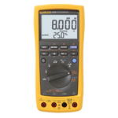 |
|
Das ProcessMeter™ Fluke 787B erweitert Ihre Möglichkeiten bei der Fehlersuche, weil dieses kompakte Messgerät die Leistung eines Digitalmultimeters mit höchster Sicherheit und eines Stromschleifenkalibrators vereint. |
| 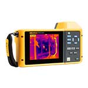 |
|
Eindrucksvolle Wärmebilder mit 640 x 480 Pixeln und äußerst preiswert!
Der um 240° schwenkbare Bildschirm der TiX580 erleichtert das Aufnehmen von Bildern bei der Arbeit in gefährlichen und schwer zugänglichen Bereichen. Das ergonomische Design und der Trageriemen machen lange Inspektionsarbeiten um ein Vielfaches angenehmer. Bei Arbeiten im Freien lässt sich der schwenkbare Bildschirm so einstellen, dass die Blendwirkung minimiert wird. Der große 14,5 cm (5,7")-Touchscreen bietet erstklassige Ablesbarkeit. Warum sollten Sie sich mit weniger zufrieden geben? |
|
| 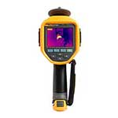 |
|
Eindrucksvolle Wärmebilder mit 640 x 480 Pixeln und äußerst preiswert! Die Ti480 Kamera mit Pistolengriff eignet sich dank einfachem Anvisieren und Auslösen für die schnelle Fehlersuche. Erkennen Sie Probleme im Handumdrehen! Intuitive, einfache Bedienung für einhändigen Betrieb und Messungen in jeder Lage. Die intuitive, einfache Bedienung für den einhändigen Betrieb ermöglicht Messungen in jeder Lage. Für bestmögliche Messergebnisse.
|
|
| 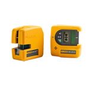 |
|
Robuste Präzisionsmessgeräte zur effektiven Vermessung
Fluke-Lasernivelliergeräte zeichnen sich durch die Robustheit aus, die Sie von jedem Fluke-Messgerät erwarten können. Die Messgeräte sind für eine Fallhöhe von 1 m ausgelegt, sodass Sie sich bei jedem Gebrauch auf sie verlassen können. |
| 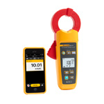 |
|
Stillstandzeiten reduzieren - Leckströme finden ohne Geräte und Anlagen abzuschalten
Die Echteffektiv-Leckstrommesszangen der Serie Fluke 360 helfen Benutzern, Leckstrommesswerte im Zeitverlauf zu erfassen, zu dokumentieren, aufzuzeichnen und zu vergleichen, um ungeplante Stillstandzeiten zu vermeiden und die Auslöser intermittierender Fehlerstromschutzschalter sowie Fehlerstrom-Schutzeinrichtungen zu ermitteln, ohne die Geräte außer Betrieb zu nehmen. |
|
| 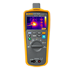 |
|
Finden. Reparieren. Überprüfen. Protokollieren.
Das Fluke 279 FC ist ein voll ausgestattetes Digitalmultimeter mit integrierter Thermografiefunktion, mit dem Sie noch verlässlichere Messergebnisse erzielen und Ihre Produktivität steigern können. Das Wärmebild-Multimeter hilft Ihnen beim schnellen Finden, Reparieren, Überprüfen und Protokollieren von elektrischen Störungen, sodass Sie sicher sein können, dass die Probleme behoben sind.
- Wärmebilder mit einer Auflösung von 80 x 60 Pixeln
- LCD-Farbbildschirm mit 8,9 cm/3,5" Diagonale
- 15 Messfunktionen, einschließlich: Wechselspannung mit Tiefpassfilter, Gleichspannung, Widerstand, Durchgangsprüfung, Kapazität, Diodentest, Min./Max./Mittelwert, Wechselstrom (mit Stromzange iFlex), Frequenz
- Mit Thermografie erkennt man elektrische Probleme schnell und sicher und kann sich dadurch viele zeitaufwendige Messungen und Validierungen ersparen.
- Die Kombination von zwei Messgeräten in einem wurde zur Steigerung der Produktivität entwickelt – Sie müssen nicht mehr zurück zum Wagen oder ins Büro, um eine geliehene Kamera zurückzugeben, oder auf einen Thermografieexperten warten, dadurch schaffen Sie mehr in kürzerer Zeit!
- Drahtlose Übertragung von Messwerten auf Smartphones mit Fluke Connect®
- Erweiterte Messfunktionen mit iFlex® – für enge, schwer zugängliche Stellen
|
|
| 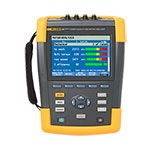 |
|
Der neue Netzqualitäts- und Motoranalysator Fluke 438-II verfügt über die hohe Funktionalität der Analysatoren der Serie Fluke 430-II zur Messung der Netzqualität und besitzt auch wichtige Funktionen für mechanische Messungen bei elektrischen Motoren. |
|
| 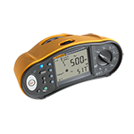 |
|
Schützt Geräte, teilt Ergebnisse drahtlos und führt mit einer einzigen Berührung sieben Prüfschritte durch.
Der Installationstester Fluke 1664 FC ist das einzige Messgerät seiner Art mit "Isolationsvorprüfung". Falls der Tester erkennt, dass ein Gerät mit dem zu prüfenden System verbunden ist, hält er die Isolationsprüfung an und hilft dadurch, versehentliche Schäden zu vermeiden. Der Tester 1664 FC verfügt darüber hinaus über Fluke Connect, sodass Sie die Prüfergebnisse zu Ihrem Smartphone senden und mit anderen zusammenarbeiten können. Auto Test führt auf einen einzigen Tastendruck sieben Prüfschritte durch, wodurch die Anzahl der manuellen Verbindungen verringert und die Wahrscheinlichkeit, Fehler zu machen, gesenkt wird. |
|
| 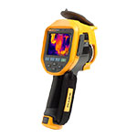 |
|
Zu 100 % fokussiert – jedes Objekt, nah und fern
Die Wärmebildkamera Fluke Ti450 mit MultiSharp™-Fokus erzeugt Wärmebilder, die im gesamten Gesichtsfeld der Kamera fokussiert sind, und bietet mit SuperResolution die vierfache Pixelzahl. Außerdem können Sie Wärmebilder von der Kamera drahtlos zur Cloud übertragen und die Bilder auf diese Weise an Datensätze für Geräte und Anlagen oder Arbeitsaufträge anhängen.
- Klare, detaillierte Bilder, die über das gesamte Sichtfeld fokussiert sind, mit MultiSharp™ Fokus aufnehmen. Einfach ausrichten und abdrücken – die Kamera verarbeitet automatisch Bilder, die in der Nähe und Ferne fokussiert wurden, und vereinigt sie zu einem vollständig scharfen Bild.
- Sie erhalten sofort ein fokussiertes Bild des anvisierten Messobjekts. Der nur von Fluke angebotene LaserSharp®-Autofokus nutzt einen integrierten Laser-Entfernungsmesser zur genauen Berechnung und Anzeige der Entfernung bis zum Messobjekt.
- Vierfache Pixelzahl mit der SuperResolution-Funktion, die mehrere Bilder aufnimmt und zu einem 640x480-Wärmebild zusammensetzt.
- Zeitersparnis – Sie können Bilder drahtlos von der Kamera direkt zum Fluke Connect® System übertragen und an einen Datensatz für Geräte und Anlagen oder Arbeitsauftrag anhängen.
- Die IR-Fusion®-Technologie dient der besseren Erkennung von Details durch exakte Überblendung von Sichtbild und Wärmebild oder durch Bild-in-Bild-Darstellung.
- Sie können Prozesse fernsteuern und mit Videoaufzeichnung und Videostreaming überwachen.
- Dank auswechselbarer hochwertiger Objektive – 2-fach- und 4-fach-Teleobjektive und Weitwinkelobjektive – sehen Sie alle benötigten Einzelheiten. Die Objektive sind kalibriert und mühelos austauschbar.
|
|
| 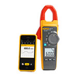 |
|
Heizungs-, Lüftungs- und Klimasysteme (HLK), Berichte zu erstellen und mit Kollegen am Arbeitsplatz zusammenzuarbeiten.
Die Echteffektiv-HLK-Strommesszange Fluke 902 FC, ein mit Fluke Connect® kompatibles Messgerät mit drahtloser Datenübertragung, erhöht die Produktivität von HLK-Technikern im Außeneinsatz. Das robuste Messgerät, das für CAT III 600 V und CAT IV 300 V zugelassen ist, führt die wesentlichen Messungen von HLK-Systemen durch. Dazu zählen die Messung des Ausgangssignals von Flammensensoren in µA, des Widerstands bis zu 60 kΩ, des Wechselstroms, der Wechsel-/Gleichspannung, der Kapazität und der Berührungstemperatur. So müssen Sie nicht länger mehrere Geräte mitnehmen. Dank schlankem Gehäuse und konischer Zangenform ist es handlich und eignet sich hervorragend für beengte Arbeitsbereiche. |
|
| 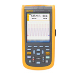 |
|
Die kompakten und robusten Oszilloskope der ScopeMeter® Serie 120B bieten Lösungen für die Fehlersuche bei elektromechanischen Geräten und Instandhaltungsanwendungen. Es sind voll integrierte, bedienungsfreundliche Messgeräte, die ein Oszilloskop, ein Multimeter und einen schnellen Messdaten-Recorder in einem Gehäuse vereinen. |
|
| 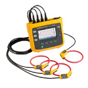 |
|
Umfassende Netzqualitäts- und Energieverbrauchsstudien – so erhalten Sie Daten für wichtige Entscheidungen in Echtzeit
Der dreiphasige Power-Logger Fluke 1738 mit Fluke Connect® Mobile App und im Lieferumfang enthaltener PC-Software liefert Ihnen die Daten, die Sie für wichtige sofortige Entscheidungen über Netzqualität und Energieverbrauch benötigen. Wie der Power-Logger Fluke 1736 erfasst und protokolliert das mit erweiterten Funktionen ausgestattete Modell 1738 automatisch über 500 Netzqualitätsparameter und ermöglicht Ihnen die effektive Fehlersuche bei Netzqualitätsproblemen. |
|
| 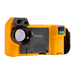 |
|
Entwickelt für Instandhaltungs-, Prozess- und elektrische Anwendungen; die Wärmebildkamera TiX560 mit dem 2-fach-Teleobjektiv vergrößert entfernte Objekte. Dadurch kann man das Betreten von gefährlichen Umgebungen stark reduzieren oder sogar ganz vermeiden. |
|
| 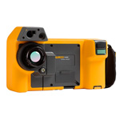 |
|
Entwickelt für professionelle Inspektionen von Industrieanlagen und die Gebäudediagnose; die Wärmebildkamera TiX560 bietet mit einem Weitwinkelobjektiv ein größeres Sichtfeld, und Sie können auf engem Raum mehr oder große Bereiche auf einen Blick sehen. |
|
| 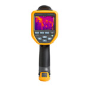 |
|
Die Kamera für die professionelle Fehlersuche mit einer Auflösung von 320 x 240 Pixeln
- Scharfe Bilder bis hinunter zu einem Abstand von 0,15 m dank der Flexibilität des manuellen Fokus
- Berichterstellung direkt vom Einsatzort mit Fluke Connect®
- Sicheres Speichern und Verwalten der Bilder
- WLAN-Upload in den Fluke-Cloud™ Speicher
- Kostenloser Speicher¹ in der Fluke Cloud
- Teilen von Bildern in Echtzeit mit der Fluke Connect® App²
- Interner 4 GB-Speicher und austauschbare 4 GB-MicroSD-Speicherkarte
- Sprachnotizen,IR-PhotoNotes™ und Videoaufzeichnungen
- Erstellen und Versenden von Berichten per E-Mail direkt vom Einsatzort aus mit der Fluke Connect App², ohne das Büro zur Bearbeitung von Berichten aufsuchen zu müssen
¹5 GB freier Speicher
²Im Funkausbreitungsbereich des Dienstanbieters. Fluke Connect ist nicht in allen Ländern verfügbar |
|
| 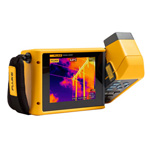 |
|
Die 180°-Wärmebildtechnologie wird Ihren Blickwinkel verändern. Die Antwort scheint ganz nah, obwohl Ihr Messobjekt weit entfernt ist.
- Überragende Sicht vor Ort dank des größten 5,7 Zoll-LCD-Touchscreens seiner Klasse¹ – 150 % größerer Sichtbereich²
- Einfache Navigation über, unter und um Objekte herum mit dem 180°-Schwenkobjektiv; Sie sehen das Bild, bevor Sie es aufnehmen
- Sparen Sie Zeit bei der Nachbearbeitung von Bildern – passen Sie Emissionsgrad, Hintergrundtemperatur, Transmissivität, Farbpaletten, Farbalarme, IR-Fusion® (Bildüberblendung) an und aktivieren/deaktivieren Sie Marker über die Kamera
¹Verglichen mit industriellen tragbaren Wärmebildkameras mit einer Detektorauflösung von 320 x 240, Stand: 1. September 2015 ²Bis zu 30 Meter (100 Fuß)
²Im Vergleich zu einem standardmäßigen 3,5-Zoll-Bildschirm in dieser Klasse |
|
| 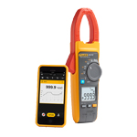 |
|
Die neue Serie Fluke 370 FC ermöglicht eine bessere und flexiblere Fehlersuche.
- Fluke Connect®-kompatibel:
- Protokollierung und Trendmessungen zur Erkennung von intermittierenden Fehlern
- Erfassung von Messergebnissen außerhalb der Lichtbogenzone mit Bluetooth-Verbindung zu Apple- und Androidgeräten
- Drahtlose Übertragung der Ergebnisse mit der Fluke Connect Measurement App
- Berichterstellung und -versendung direkt vor Ort
- Einfache Messungen an ungünstig geformten Leitern und in beengten Räumen mit der flexiblen Stromzange iFlex®
|
|
| 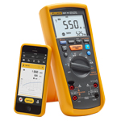 |
|
Das neue Isolations-Multimeter Fluke 1587 FC vereint die Funktionen eines digitalen Isolationsmessgeräts und eines voll ausgestatteten Echteffektiv-Digitalmultimeters in einem kompakten Handmessgerät. Bei Nutzung der Fluke Connect Measurement App erhalten Sie vier neue leistungsstarke Diagnosefunktionen:
- Prüfung von Polarisationsindex (PI) und dielektrischem Absorptionsgrad (DAR) mit TrendIt™-Diagrammen zur schnelleren Problemerkennung
- Kein Notieren der Ergebnisse dank der Speicherung über Fluke Connect, wodurch Fehler reduziert und Daten in der Historie der Messungen rückverfolgt werden können
- Temperaturkompensation sichert genaue Sollwerte und Vergleiche mit relevanten Daten aus der Historie der Messungen
- Erkennung von Leistungsminderungen dank Vergleichen mit Daten aus der Historie und Trenddarstellung sowie Treffen von Entscheidungen in Echtzeit vor Ort mit Fluke Connect® Assets (separat erhältlich)
|
|
| 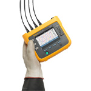 |
|
Bessere Problemerkennung, weniger Unsicherheiten, bessere Netzqualität und Beurteilungen des Energieverbrauchs
Der dreiphasige Power-Logger Fluke 1736 mit Fluke Connect® Mobile App und im Lieferumfang enthaltener PC-Software liefert Ihnen die Daten, die Sie für wichtige sofortige Entscheidungen über Netzqualität und Energieverbrauch benötigen. Fluke 1736 ist das ideale Messgerät zur Durchführung von Energieverbrauchsstudien und Protokollierung der Netzqualität. Das Gerät erfasst und protokolliert automatisch über 500 Netzqualitätsparameter. Dadurch haben Sie einen besseren Einblick in die Daten, die Sie zur Optimierung von Systemzuverlässigkeit und Energieeinsparungen benötigen.
*Es sind nicht alle Modelle in allen Ländern erhältlich. Wenden Sie sich bitte an Ihren Fluke-Vertriebspartner. |
|
| 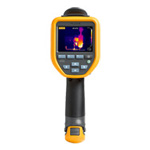 |
|
Sehen Sie mehr Details mit einer verbesserten Auflösung, die Ihnen die passende Bildqualität für die richtige Diagnose liefert.
- Bis zu 2,5 Mal¹ mehr Pixel und 70 %¹ besserer D:S (Abstand zu Messfleckgröße)
- Reduzieren Sie den Zeitaufwand, um ein scharfes Bild mit manuellen oder eingestellten Fokussieroptionen zu erhalten
- Sicheres Speichern und Verwalten der Bilder
- WLAN-Upload in den Fluke-Cloud™-Speicher
- Kostenloser Speicher² im Fluke Cloud Speicher
- Teilen von Bildern in Echtzeit mit der Fluke Connect® App³
- Interner 4 GB-Speicher und austauschbare 4 GB-Micro-SD-Speicherkarte
- Sprachnotizen
- Erstellen und versenden Sie Berichte per E-Mail vom Arbeitsplatz aus mit der Fluke Connect App³, ohne das Büro zur Bearbeitung von Berichten aufsuchen zu müssen
¹Im Vergleich zu den Fluke-Wärmebildkameras der Serie Ti1xx.
²5 GB freier Speicher
³Im Funkausbreitungsbereich des Dienstanbieters. Fluke Connect ist nicht in allen Ländern verfügbar |
|